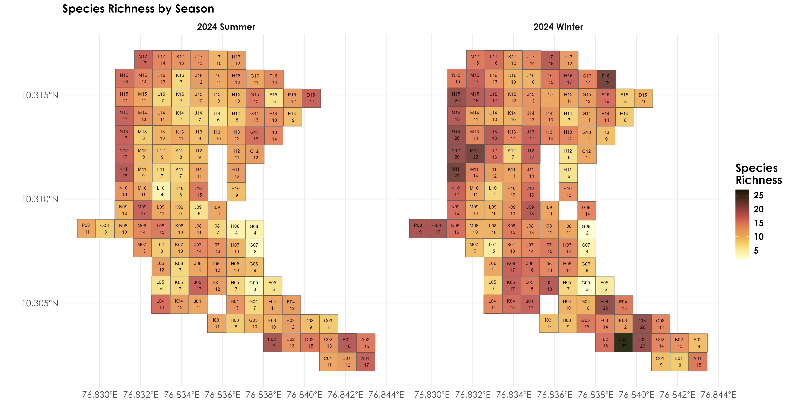

Section 2 Exploring point-count data
In this script, we will explore the point-count data to understand bird species diversity patterns across seasons. For this analysis, we rely on two seasons of point-count data, that was carried out in June 2024 and Dec 2024.
## Install required libraries
library(tidyverse)
library(dplyr)
library(stringr)
library(ggplot2)
library(data.table)
library(extrafont)
library(sf)
library(raster)
# for plotting
library(scales)
library(ggplot2)
library(ggspatial)
library(colorspace)
library(scico)
# Source any custom/other internal functions necessary for analysis
source("code/01_internal-functions.R")2.1 Loading point-count data
# load two seasons of point-count data
point_counts <- read.csv("data/point-count-data.csv")
# removing all mammal species and unidentified bird species
point_counts <- point_counts %>%
filter(birdMamm == "Bird")
# Using gsub to remove text within parentheses including the parentheses
point_counts$eBirdIndiaName2023 <- gsub("\\s*\\([^\\)]+\\)", "", point_counts$eBirdIndiaName2023)
# add species scientific name to the point-count data
sci_name <- read.csv("data/species-taxonomy.csv")
sci_name$eBirdIndiaName2023 <- gsub("\\s*\\([^\\)]+\\)", "", sci_name$eBirdIndiaName2023)
# add scientific_name to the point_count data
point_counts <- left_join(point_counts[,-7], sci_name[,-c(1,2,4)])
# rename columns
names(point_counts)[4] <- "start_time"
names(point_counts)[7] <- "common_name"
names(point_counts)[12] <- "scientific_name"
# write to file
write.csv(point_counts, "results/cleaned-point-count-data.csv", row.names = F)2.2 Load site level information and create gridded data
# we write a function below to create a grid around the centroid of each location of size 1ha
# the grid is primarily created for visualizing species richness & other associated metrics (this step is optional)
# function to create square grid around a point
create_square_grid <- function(lon, lat, size_ha = 1) {
# convert hectares to degrees (approximate conversion)
# 1 ha = 100m x 100m
# at the equator, 1 degree is approximately 111,320 meters
# so we need to convert 100m to degrees
size_degrees <- sqrt(size_ha) * 100 / 111320
# Create a square polygon
coords <- matrix(c(
lon - size_degrees/2, lat - size_degrees/2, # bottom left
lon + size_degrees/2, lat - size_degrees/2, # bottom right
lon + size_degrees/2, lat + size_degrees/2, # top right
lon - size_degrees/2, lat + size_degrees/2, # top left
lon - size_degrees/2, lat - size_degrees/2 # close the polygon
), ncol = 2, byrow = TRUE)
# Create polygon
pol <- st_polygon(list(coords))
return(pol)
}
# function to obtain the latitude and longitude from a .csv file and create an associated shapefile
create_grid_shapefile <- function(csv_path, output_shp, lon_col = "longitude", lat_col = "latitude") {
# read CSV file
data <- read.csv(csv_path)
# create list to store polygons
polygons <- list()
# create square grid for each point
for(i in 1:nrow(data)) {
polygons[[i]] <- create_square_grid(
data[[lon_col]][i],
data[[lat_col]][i]
)
}
# convert to sf object
grid_sf <- st_sf(
# Include original data
data,
# Convert polygon list to geometry
geometry = st_sfc(polygons, crs = 4326)
)
# write to shapefile
st_write(grid_sf, output_shp, driver = "ESRI Shapefile", append = FALSE)
return(grid_sf)
}
# site-level information
sites <- "data/sites.csv"
grid_shp <- "data/candura_grids.shp"
# Create the grid shapefile
grid_sf <- create_grid_shapefile(
csv_path = sites,
output_shp = grid_shp,
lon_col = "decimalLongitude", # replace with your longitude column name
lat_col = "decimalLatitude" # replace with your latitude column name
)2.3 Extract species-level information
# estimate abundance across all species for each grid and season
abundance <- point_counts %>%
group_by(gridID, common_name, seasonYear) %>%
summarise(abundance = sum(number)) %>%
ungroup()
# unique species observed across seasons
# in summer 82 unique species were detected
summer_species <- abundance %>%
filter(seasonYear == "2024 Summer") %>%
distinct(common_name)
# 89 unique species were detected in the winter
winter_species <- abundance %>%
filter(seasonYear == "2024 Winter") %>%
distinct(common_name)
# overall list of unique species detected in point counts
# 107 unique species were detected across both seasons
pc_species <- abundance %>%
group_by(common_name) %>%
summarise(cumulative_abundance = sum(abundance)) %>%
left_join(., sci_name[,-c(1,2,4)],
by = c("common_name" = "eBirdIndiaName2023")) %>%
rename(., scientific_name = eBirdScientificName2023) %>%
arrange(desc(cumulative_abundance))
# write to file
write.csv(pc_species, "results/species-in-point-counts.csv",
row.names = F)
# total abundance by species for each season across grids
totAbundance_by_season <- abundance %>%
group_by(common_name, seasonYear) %>%
summarise(totAbundance = sum(abundance))
# species most abundant across seasons include the Yellow-browed Bulbul, Southern Hill Myna, Crimson-backed Sunbird, Greater Racket-tailed Drongo
# estimate richness for point count data (calculated for each site)
richness <- abundance %>%
mutate(forRichness = case_when(abundance > 0 ~ 1)) %>%
group_by(gridID, seasonYear) %>%
summarise(richness = sum(forRichness)) %>%
ungroup()2.4 Visualizing richness data across seasons
# First, join your species data with the spatial data
grid_with_richness <- grid_sf %>%
left_join(richness, by = "gridID")
# Create the plot
fig_richness_by_season <- ggplot() +
geom_sf(data = grid_with_richness, aes(fill = richness),
alpha=0.9) +
geom_sf_text(data = grid_with_richness,
aes(label = paste(gridID, "\n", richness)),
size = 2) +
facet_wrap(~seasonYear) +
scale_fill_scico(palette = "lajolla")+
theme_minimal() +
labs(fill = "Species\nRichness",
title = "Species Richness by Season") +
theme(text = element_text(family = "Century Gothic", size = 14, face = "bold"),plot.title = element_text(family = "Century Gothic",
size = 14, face = "bold"),
plot.subtitle = element_text(family = "Century Gothic",
size = 14, face = "bold",color="#1b2838"),
axis.title = element_blank())
ggsave("figs/fig_richness_by_season.png", plot = fig_richness_by_season, width = 14, height = 7, units = "in",
dpi = 300, bg = "white")
dev.off()

Species richness by season
2.5 Visualizing abundance by species across seasons
# join abundance data with the spatial data
grid_with_abundance <- grid_sf %>%
left_join(abundance, by = "gridID")
# first, let's create a base grid that has all possible combinations
base_grid <- grid_with_abundance %>%
dplyr::select(gridID, geometry) %>%
distinct()
# get unique seasons
seasons <- unique(grid_with_abundance$seasonYear)
# create a complete grid with all combinations
complete_grid <- base_grid %>%
crossing(seasonYear = seasons) %>%
st_sf()
# get unique species list
species_list <- unique(grid_with_abundance$common_name)
# create PDF
pdf("figs/species_by_season_abundance.pdf", width = 14, height = 7)
# loop through each species
for(sp in species_list) {
# get data for this species
current_species_data <- grid_with_abundance %>%
filter(common_name == sp) %>%
dplyr::select(gridID, seasonYear, abundance) %>%
st_drop_geometry()
# join with complete grid
plot_data <- complete_grid %>%
left_join(current_species_data, by = c("gridID", "seasonYear"))
# Create plot
p <- ggplot() +
geom_sf(data = plot_data, aes(fill = abundance),
alpha = 0.9) +
geom_sf_text(data = plot_data,
aes(label = paste(gridID, "\n",
ifelse(is.na(abundance),
"0", abundance))),
size = 2) +
facet_wrap(~seasonYear) +
scale_fill_scico(palette = "lajolla",
na.value = "grey80")+
theme_minimal() +
theme(text = element_text(family = "Century Gothic", size = 14, face = "bold"),plot.title = element_text(family = "Century Gothic",
size = 14, face = "bold"),
plot.subtitle = element_text(family = "Century Gothic",
size = 14, face = "bold",color="#1b2838"),
axis.title = element_blank()) +
labs(fill = "Abundance",
title = paste("Abundance of", sp, "by Season"))
print(p)
}
dev.off()